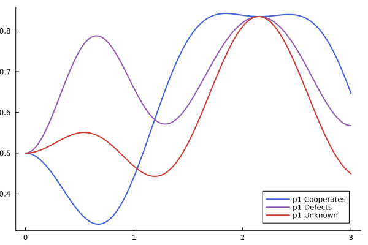

QuantumPrisonersDilemmaModel.jl
This package contains code for a quantum cognition model of inteference effects in the prisoner's dilemma. The plot below shows the dynamics of the model for each condition.
Show Code
using Plots
using QuantumPrisonersDilemmaModel
model = QPDM(;μd=.51, γ=2.09)
ts = range(0, 3, length=300)
preds = map(t -> predict(model; t), ts)
color = [RGB(.251,.388,.847) RGB(.584,.345,.689) RGB(.796,.235,.2)]
p1 = plot(ts, reduce(vcat, transpose.(preds)), grid=false,
label=["p1 Cooperates" "p1 Defects" "p1 Unknown"],
xlabel="Time", ylabel="Prob p2 Defects", linewidth=2; color)
savefig("temp.png")"/home/runner/work/QuantumPrisonersDilemmaModel.jl/QuantumPrisonersDilemmaModel.jl/docs/build/temp.png"
Installation
This package is not registered in Julia's general registry. However, there two ways you can install the package. Option 1 is to install without version control. In the REPL, use ] to switch to the package mode and enter the following:
add https://github.com/itsdfish/QuantumPrisonersDilemmaModel.jlOption 2 is to install via a custom registry. The advantage of this approach is that you have more control over version control, expecially if you are using a project-specfic environment.
- Install the registry using the directions found here.
- Add the package by typing
]into the REPL and then typing (or pasting):
add QuantumPrisonersDilemmaModelReferences
Pothos, E. M., & Busemeyer, J. R. (2009). A quantum probability explanation for violations of ‘rational’decision theory. Proceedings of the Royal Society B: Biological Sciences, 276(1665), 2171-2178.